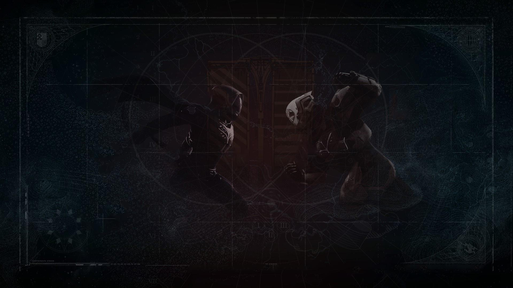

The Crucible

"What is the Crucible? Before the days of the City and the Iron Lords,
it was a place to pursue vendettas. To battle for territory, and pettier reasons.
The whole world was a Crucible Arena. The Crucible today? To Cayde-6,
it's a gambler's paradise. To Zavala, it's a resource sink where equipment goes
to die. To Ikora, it's home—though she would never admit it. Partial answers.
The tactics and techniques that will save us in wars to come are birthed in the C
rucible, during live-fire training. The Vanguard are so preoccupied with their own
agendas they're missing the Vanguard of tomorrow rising right before their eyes." — Lord Shaxx
The Crucible is a live-fire competitive arena where guardians are pitted against each other in combat. It's
main priority is to train guardians in strategy and battle tactics. Consistent training
in the Crucible allows them to hone their skills so that they may go out and continue to defend The Last City in the wars to come.